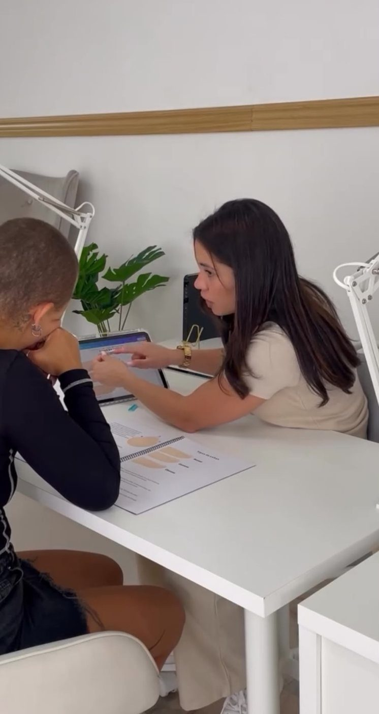
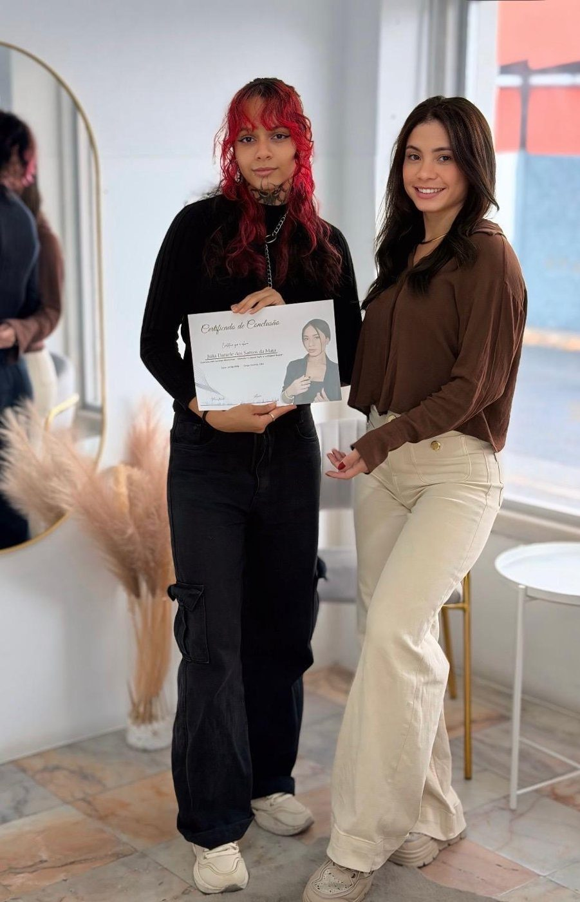
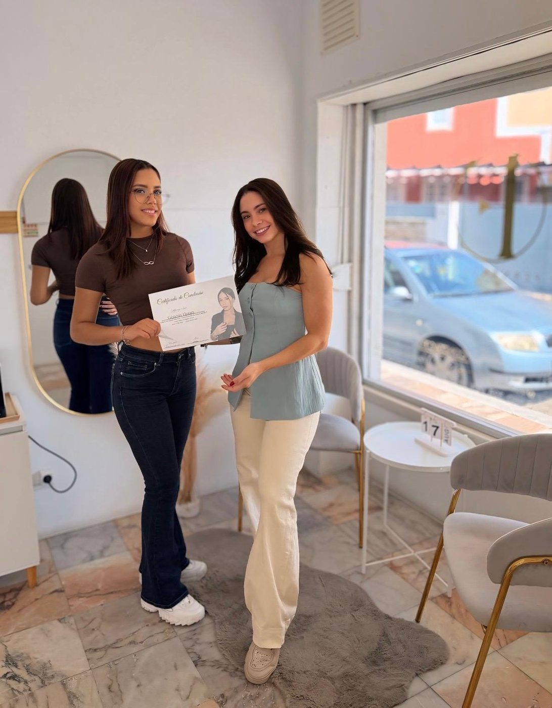
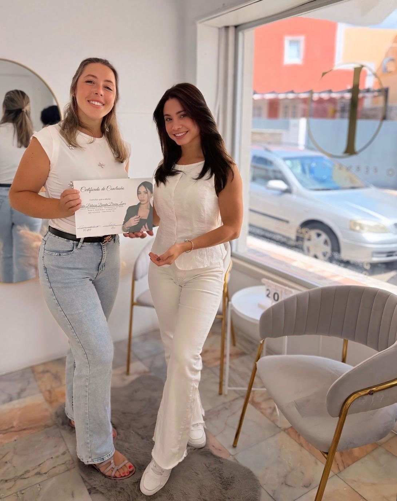
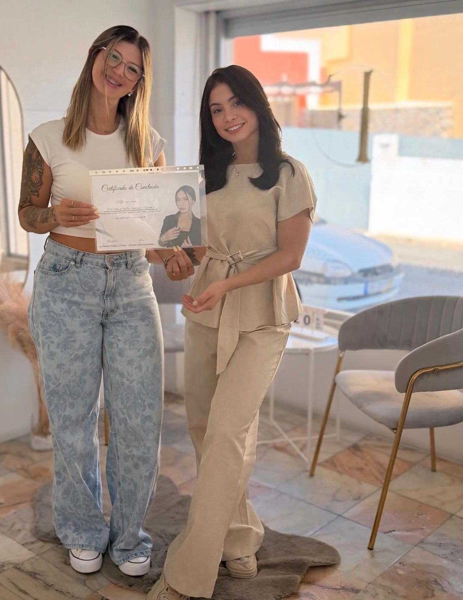
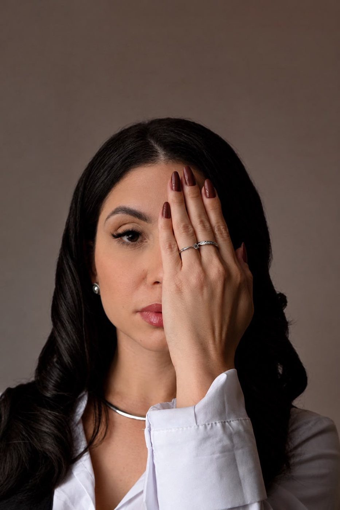
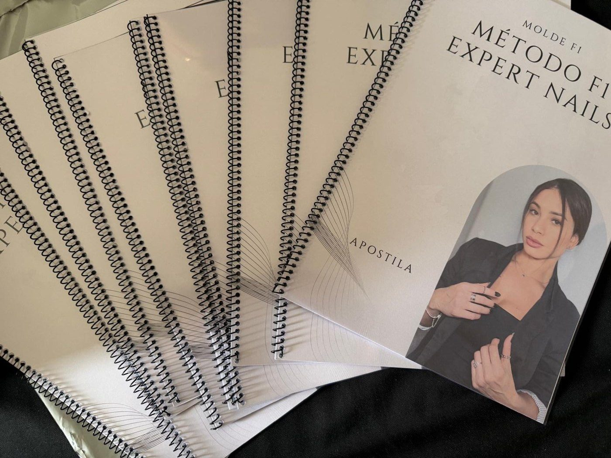
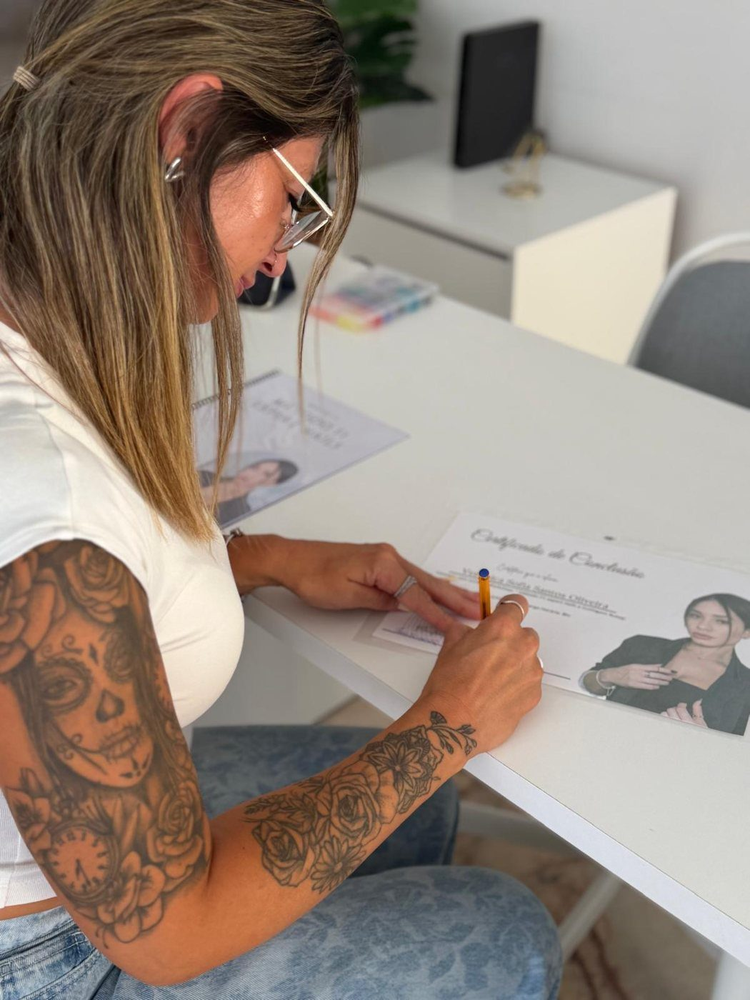
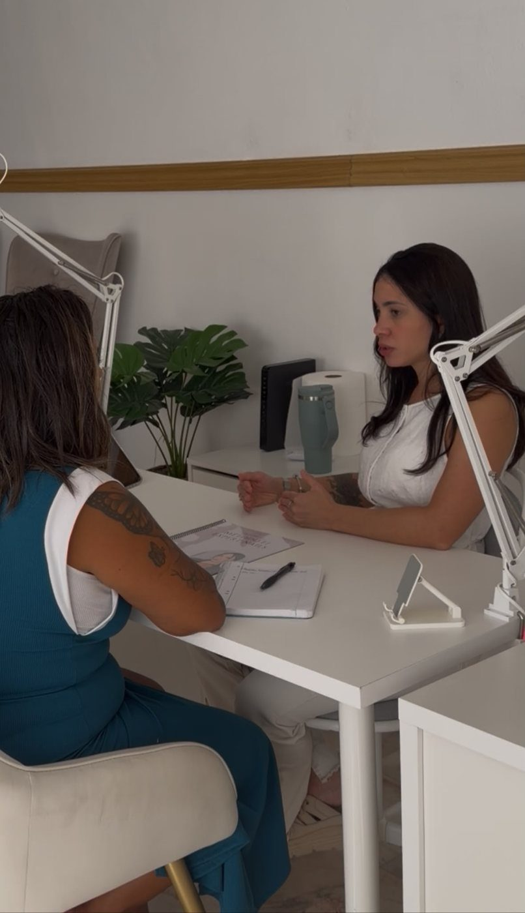

Fundamentos
- Introdução teórica
- Apresentação dos materiais
- Aspectos importantes
- Anatomia e fisiologia




Alunas certificadas pelo Método F1 Expert Nails
Formadas pela Thalia no Espaço Fernandes Beauty
Na internet só aparece o resultado final. Fico sem saber o passo a passo e acabo tentando sozinha.
Descolamento, formato irregular, retrabalho… e eu fico com medo de perder a cliente.
Aprendi um pouco de tudo em pouco tempo, mas nenhuma técnica ficou bem feita.
“Foi para resolver isto que eu criei
o Método F1 Expert Nails.”
Thalia Fernandes

O mesmo passo a passo que a Thalia usa todos os dias com as clientes do Espaço Fernandes Beauty, organizado para quem está começando do zero e para quem já atende e quer aperfeiçoar a técnica.
Você aprende a técnica completa com ela, lado a lado, e sai sabendo exatamente o que fazer em cada etapa. A prática depois é sua; a técnica certa você leva daqui.
Alongamento longo
Formato longo e acabamento nude, feito em molde F1.



Posicionamento e marketingComo apresentar o seu trabalho e atrair as primeiras clientes.
Caixa com mimoUma surpresa para levar para casa.
Coffee breakPausas incluídas nos dois dias.
Manicure desde os 12 anos, a Thalia cresceu dentro de salão de beleza. A paixão pelas unhas começou no Brasil; hoje, aos 28 anos, é especialista em molde F1 e molde russo, fundadora do Espaço Fernandes Beauty e formadora. Criou o Método F1 Expert Nails para ensinar a técnica que usa todos os dias, a quem está começando e a quem quer se aperfeiçoar.
“Não quero apenas fazer unhas bonitas. Quero ajudar mulheres a perceberem que também podem transformar uma habilidade em profissão, uma profissão em negócio e um sonho em realidade.”
Quero ser a próxima“Ela dá atenção a cada detalhe. Havia coisas que eu achava que estavam bem e estavam completamente erradas, e corrigi de uma vez por todas.”
Não. O workshop começa do zero para quem é iniciante e também serve para quem já trabalha com unhas e quer aperfeiçoar a técnica.
Presencial, no Espaço Fernandes Beauty, em 2 dias intensivos, das 9h30 às 17h30, com 1 hora de pausa para almoço.
Não há modelo: a prática é feita em você mesma. Por isso, venha com as unhas sem resíduos de produto.
Sim. Ao terminar o workshop recebe o certificado de conclusão, além da apostila Método F1 Expert Nails.
250€ no total. A vaga fica garantida com uma entrada de 50€; as vagas são limitadas. Pode pagar com cartão, dinheiro ou MB Way.
Fale com a Thalia pelo WhatsApp e garanta a vaga com a entrada de 50€.